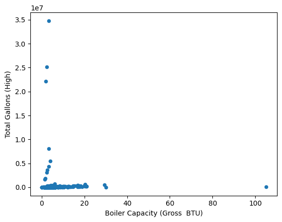

Total Population: 32,120
Male Population: 15,586
Female Population: 16,535
Median Age: 32
Citizen US Born: 16,037
Citizen Not US Born: 7,698
Not Citizen: 8,386
White: 11.8%
Hispanic: 64.1%
Black: 14.0%
Asian: 7.6%
Native American: 0.9%
Other: 1.6%
Average Household Income: $53,447
Median Household Income: $42,768
People below Poverty Level: 8,782
People above Poverty Level: 21,874
Total Households: 11,271
Average People Per Household: 3
Family Households: 7,119
Non-family Households: 4,152
Households with Children: 4,189
Households without Children: 7,082
Total Population: 73,395
Male Population: 35,577
Female Population: 37,818
Median Age: 30.8
Citizen US Born: 36,353
Citizen not US Born: 18,330
Not Citizen: 18,713
White: 4%
Hispanic: 73%
Black: 19%
Asian: 2%
Native American: 0%
Other: 2%
Average Household Income: $50,029
Median Household Income: $41,550
People below Poverty Level: 20,204
People above Poverty Level: 50,361
Total Households: 25,465
Average People Per Household: 2
Family Households: 16,372
Non-family Households: 9,093
Households with Children: 9,750
Households without Children: 15,715
The NYC Clean Heat Program was implemented to make NYC more energy efficient by helping New Yorkers transition from previous traditional methods of heating and cooling to cleaner heating fuels. The program encourages a switch to cold climate air source heat pumps (ASHP, extract heat from the air outside and distribute it inside your home), energy efficient ground source heat pumps (GSHP, pull heat out of the ground through an underground pipe system and then distribute it through the building), and heat pump water heaters (HPWH, use electricity to pull heat out of the air and direct it into water enclosed in a tank). The key contributors to the issue at hand are No. 4 fuel, “distillate fuel made by blending distillate fuel oil and residual fuel oil stocks” that is used often in industrial plants and commercial burner installations that don’t have preheating facilities, and No. 6 fuel, a dense oil made by blending heavy residual oils with a lighter oil that is used for the production of electric power, space heating, vessel bunkering, and various industrial purposes. The NYC Department of Environmental Protection's Boiler Registration program carefully monitors boilers to reduce soot emissions and ensure they are up to operational standards using the Clean Air Tracking System (CATS). It requires buildings to register any boilers that output more than 350,000 BTUs but less than 2.8 million BTUs. Additionally, the Greener Greener Buildings Plan (GGBP) is a comprehensive set of energy efficiency laws targeting New York City’s largest existing buildings, aiming to reduce our carbon footprint and save customers $700 million in annual energy costs. For example, Law 84 requires building owners to assess their energy and water usage every year and report this information to the Environmental Protection Agency, and Law 87 requires all buildings that are over 50,000 square feet to get an energy audit and retro-commission every ten years. The Clean Heat program provides resources to building owners to help them make the transition, and the city continues to implement incentives, such as a hard deadline, that encourage businesses and homeowners to switch to clean heating.
A main contributor to New York City’s greenhouse gas emissions is its buildings, whose emissions mainly come from housing and food-related consumption, each of which produced around 7 metric tons of CO2 emissions per household in 2019. The total carbon emissions for 22,852 properties in NYC as a whole this year is 17,738,124 metric tons of CO2 (primarily from natural gas), of which 5,119,577 metric tons comes from the 4,377 properties in the Bronx, meaning the Bronx contributes to approximately 29% of the whole city’s carbon emissions. According to NYC EcoDataLab’s “Consumption-Based Emissions Map,” the Bronx seems to have relatively low emissions throughout, generally staying below 29 MTCO2e per household, and below 12 MTCO2e per person, whereas the rest of the city produce up to 60 MTCO2e per household and 28 MTCO2e per person. 49% percent of a household’s housing emissions comes from natural gas, and 19% comes from electricity. Furnishings and appliances contribute to 37% of a household’s goods emissions. The Bronx typically had lower emissions compared to the rest of the NYC boroughs and NYC as a whole, transportation contributing 2.5 MTCO2e per household, 6.0 housing, 6.9 food, 3.6 goods, and 4.9 services, the total per household emissions being 24 MTCO2 and the total per capita emissions 9. On the other hand, NYC as a whole on average contributed 4.1 MTCO2e per household, 7.0 housing, 7.5 food, 4.2 goods, and 5.9 services, the total per household emissions being 29 MTCO2 and the total per capita emissions 11. In 2019, the Climate Mobilization Act was set which limited emissions from buildings over 25,000 square feet, and required solar and green roofs for new buildings. This is predicted to reduce emissions from the biggest buildings by 40% by 2030 and 80% by 2050.
Bronx:
Brooklyn:
.png)
Manhattan:
.png)
Queens:
.png)
Staten Island:
.png)
Here, we are making scatter plots of the Boiler Capacity vs. Total Gallons (High) for each of the boroughs, in the order of Bronx, Brooklyn, Manhattan, Queens, Staten Island. For the Bronx, it appears that the majority of their boilers have relatively small capacity, not surpassing 20 BTU and 1,000,000 gallons. Brooklyn boiler capacities are even lower, typically staying below 10 BTU and 150,000 gallons, which aligns with its second lowest emissions from the chart. Manhattan's are, again, the highest, with the greatest spread as well. Queens also has one giant outlier, but the rest of the points are typically below 1,000,000 gallons. Queen's Gross BTU has a very wide spread, though, ranging from 0 to ~31, showing that it has a wide range of types of buildings. Finally, Staten Island has a wide range of values for both axes, two points indicating both very high Boiler Capacity and very high Total Gallons (High), but these values still fall below those for the Bronx, Manhattan, and Queens, which does not align with the emissions chart.
.png)
Here, we are making a bar plot of the #4 and #6 fuel fractions by borough. We can see that #4 fuel dominates in every borough, but Queens and Staten Island have the highest fractions of #6 users. This makes sense because they are two of the highest contributors to emissions based on the chart. Manhattan may be one of the other highest contributors not because of the type of fuel that is used but because of how many buildings/boilers there are that use any of these fuels at all. It is good that the majority of buildings throughout the city use #4 fuel instead of #6 fuel because #4 is the lesser of the two evils: it does not require preheating and therefore produces less energy and contributes slightly less to harmful emissions (HC3).
.png)
Here, we graph our findings about the GGB's. We can see that Staten Island has the greatest fraction of GGB's and Brooklyn has the smallest. Brooklyn may be behind in terms of GGB's, but it is also not a significant contributor to emissions according to the chart, so it makes sense that they're not in a rush to convert to GGB. Staten Island, however, is the primary contributor to emissions based on the chart and is therefore more encouraged to convert to GGB in order to restore balance.
.png)
Here, we make a pie chart to depict the fractions of buildings across the city that are and are not considered GGB. Most of them are GGB, which is great!
.png)
Here, we're making a stacked bar graph of the data we just discussed. It makes it easier to see the primary types of buildings throughout the city (elevator apartments and walk-up apartments, respectively), and which boroughs have the most of each type of building. Manhattan houses the overwhelming majority of the elevator apartments, and the Bronx does the walk-up apartments, which reflects what we analyzed earlier. Also, Manhattan is the one borough that also hosts many other types of buildings, like condominiums, hotels, loft buildings, and office buildings, which also explains why it's such a high contributor to emissions: it has a lot of buildings and people in those buildings to satisfy and take care of.
.png)
Here, we are making a pie chart of the Total MMBTU (High) Contribution by Borough. We can see that Manhattan contributes the most MMBTU, and Staten Island contributes the least, which is probably just because of how much data we have for each borough, Manhattan having way more data points than Staten Island. We also see that the Bronx contributes about 26.8% of the MMBTU, which aligns with our findings from HC4, which show that the Bronx contributes about 29% of the whole city's carbon emissions (26.8% and 29% are quite close).
Boiler Capacity Statistics in Bedford Park-Fordham North:
count 141.000000
mean 3.689078
std 1.694237
min 0.000000
25% 2.600000
50% 3.400000
75% 4.200000
max 12.630000
Name: Boiler Capacity (Gross BTU), dtype: float64
Here, we print the Boiler Capacity statistics for Bedford Park-Fordham North (we'll abbreviate as Bedford-Fordham). We can see that the mean boiler capacity is 3.69 BTU, which is relatively low compared to what we've seen in the other boroughs earlier, making this neighborhood quite energy efficient. However, the maximum is 12.63, which is very far from the mean and would therefore most likely be an outlier. Maybe that one point is a comparatively large building and therefore needs a higher boiler capacity to suffice. The relatively low mean boiler capacity aligns with the fact that this neighborhood has very small households, ranging from 2-3 people per household on average (HC2). If there are fewer people, they won't use as much energy.
Total Gallons (High) Statistics in Bedford Park-Fordham North:
count 1.410000e+02
mean 4.634472e+05
std 3.598687e+06
min 0.000000e+00
25% 2.628000e+04
50% 3.285000e+04
75% 4.496800e+04
max 3.477172e+07
Name: Total Gallons (High), dtype: float64
Total Gallons (Low) Statistics in Bedford Park-Fordham North:
count 1.410000e+02
mean 3.244131e+05
std 2.519081e+06
min 0.000000e+00
25% 1.839600e+04
50% 2.299500e+04
75% 3.147800e+04
max 2.434021e+07
Name: Total Gallons (Low), dtype: float64
Here, we are looking at the statistics of Total Gallons (High and Low) for Bedford-Fordham. The means are not very far from each other and neither are the maximums, given the range of the values, which shows that this data aligns with the Bronx's and this specific neighborhood's reputations for comparatively efficient energy usage/emissions. However, its mean is greater than the Bronx's overall for both categories, causing a disparity in how we might understand this neighborhood's efficiency. Maybe it has larger buildings that need more gallons but at the same time use less energy, for example in a walk-up apartment that may house more people than an elevator apartment.
.png)
Here, we are making a scatter plot of the Boiler Capacity vs. the Total Gallons (High) for the Bedford-Fordham neighborhood specifically. This neighborhood is on the lower side of the Bronx's boiler statistics that we looked at earlier, typically staying below 7 BTU and 1,000,000 gallons, compared to the overall Bronx's less than 20 BTU. The boilers in this neighborhood are thus typically smaller and contribute less to emissions.
.png)
Here, we are making a histogram of Bedford-Fordham's distribution of Total MMBTU (High). Most of the MMBTU is concentrated at between 2500 and 5000 MMBTU, which is typically smaller than the means of all the boroughs that we looked at earlier, further proving this neighborhood's relative efficiency.